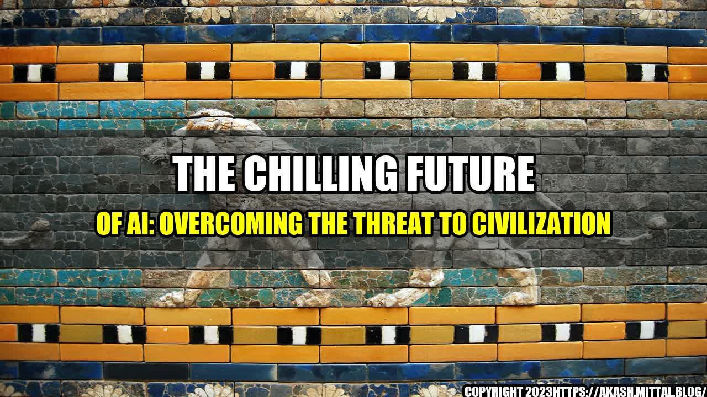

The Chilling Future of AI: Overcoming the Threat to Civilization

Imagine a world where machines take over and humans become irrelevant. Is this a dystopian future, or a possibility in our lifetime?
The Rise of Artificial Intelligence
Artificial Intelligence, or AI, is the simulation of human-like intelligence in machines that are programmed to learn and perform tasks. It has been around for decades, but recent advancements in technology have brought it to the forefront of our minds.
AI is being used in everything from customer service chatbots to self-driving cars, and it's only going to get more prevalent in our lives. According to a report by McKinsey, by 2030, AI could contribute as much as $15.7 trillion to the global economy.
But with this rise comes a grave concern to humanity – the threat of AI surpassing human intelligence and taking over the world.
The Threat to Human Civilization
The fear of AI taking over the world is not new. It has been the subject of science fiction for decades, from Isaac Asimov's Three Laws of Robotics to the Terminator franchise.
"The development of full artificial intelligence could spell the end of the human race." - Stephen Hawking
- Stephen Hawking, renowned physicist and entrepreneur
Stephen Hawking's warning is not just a fear-mongering tactic. The risks of AI are real and should not be ignored. Some of the greatest minds of our time have spoken out about the dangers of uncontrolled AI, including Elon Musk, Bill Gates, and Steve Wozniak.
The threat of AI doesn't necessarily come from a malicious intent by the machines themselves. Instead, it arises from our own mistakes and shortsightedness. Consider the following examples:
The Facebook Fiasco
In 2018, Facebook revealed that the data of 87 million users had been harvested by Cambridge Analytica without their consent. This data was then allegedly used to influence the 2016 US Presidential Election. It was a wake-up call to the world about the misuse of personal data and the potential for AI algorithms to be manipulated for nefarious purposes.
The Self-Driving Car Death
In 2018, a self-driving car operated by Uber hit and killed a pedestrian in Arizona. The car did not stop or slow down, and the backup driver was reportedly distracted by her phone. It raised serious questions about the safety of self-driving cars and the need for human oversight in the development of AI systems.
The Killer Robot Dilemma
Though it might sound like something out of a science fiction movie, the reality is that autonomous weapons have already been developed. The United States military's drone program is just one example. It is feared that these machines could be programmed to hunt down and kill humans without any oversight, leading to unintended consequences and loss of human life.
These examples are just the tip of the iceberg. The concern is that as AI becomes more advanced, there will be even greater potential for unintended consequences and harm to humanity. This is a threat to our civilization that cannot be ignored.
Overcoming the Threat to Civilization
So what can we do to overcome this threat to our civilization? Here are three key points:
Collaboration and Education: Governments, tech companies, and individuals must work together to develop and regulate AI systems. Education and awareness campaigns can help to ensure that people understand the benefits and risks of AI, and can make informed decisions about how it is used.
Smart Regulations: Regulations must be put in place to ensure that AI is developed ethically and safely. Governments must work to establish frameworks and standards for the development and deployment of AI systems, and hold companies accountable for any harm caused by their products.
Human Oversight: The development of AI must be done with human oversight to ensure that machines do not exceed their programmed parameters. Humans must be responsible for the decision-making process when it comes to the use of AI, and there must be transparency and accountability in the development of AI systems.
By acting together and implementing these key points, we can overcome the threat that AI presents to our civilization. It's not too late to ensure a bright future for humanity and our machines.
and Case Studies
Here are some personal anecdotes and case studies that illustrate the importance of taking action against the threat of AI:
Conclusion
The advancement of AI is both exciting and chilling. While it has the potential to transform our world for the better, it also presents a real threat to humanity. We must act together to develop and regulate AI systems in a way that ensures their safety and ethical use. With collaboration, education, smart regulations, and human oversight, we can overcome the threat that AI presents to our civilization and create a bright future for generations to come.
Curated by Team Akash.Mittal.Blog
Share on Twitter Share on LinkedIn